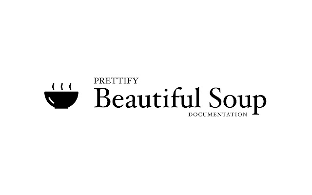

Projects
Web Scrapper
This project let's me utilize Python libraries like Pandas and Beautiful Soup
for scrapping motorcycle accessory information like Model, Price, Reviews and Ratings.
The Data collected is then transformed into dataframe, and exported as CSV for future data visualization. For further application, the code is then initialized as a function, adding timestamp and timer, while additional feature would be to import smtplib to receive email notification should a certain set price is available.
The Data collected is then transformed into dataframe, and exported as CSV for future data visualization. For further application, the code is then initialized as a function, adding timestamp and timer, while additional feature would be to import smtplib to receive email notification should a certain set price is available.

Data Cleaning With SQL Queary
Nashville Housing Data Cleaning Project
In this project, I undertook comprehensive data cleaning and transformation processes on the NashvilleHousing database to enhance its usability and accuracy for analysis. Below is a summary of the key steps I implemented:
1. Standardizing Date Formats: Ensured consistency in date formats across the dataset by converting all date entries to a standard format, enabling reliable chronological analysis and sorting.
2. Populating Missing Property Address Data: Addressed missing data issues by performing a SELF JOIN operation to fill in gaps in property address information. This step ensured all records had complete and accurate address data.
3. Breaking Down Property Address into Individual Components: Transformed the single PropertyAddress column into three distinct columns—Address, City, and State—by using the SUBSTRING and CHARINDEX functions. This breakdown allowed for more granular analysis and filtering based on specific location attributes.
4. Extracting Parts of Owner Address: Applied the PARSENAME function after replacing delimiters to break down OwnerAddress into its component parts (e.g., Street, City, Zip Code). This separation provided clearer insights into the owner’s geographical distribution.
5. Converting Binary Values to Readable Text: Enhanced the interpretability of the "Sold as Vacant" field by converting binary values (Yand N) to Yes and No using a CASE WHEN statement. This made the dataset more user-friendly and easier to understand.
6. Removing Duplicates and Optimizing the Dataset: Identified and removed duplicate entries to maintain data integrity by partitioning the dataset over key fields such as parcelID, PropertyAddress, SalePrice, SaleDate, and LegalReference. Using Common Table Expressions (CTEs), I effectively managed duplicates by ordering them by UniqueID and dropping unnecessary columns. This step reduced redundancy and optimized the dataset for efficient querying.
These data cleaning steps significantly enhanced the NashvilleHousing dataset's quality, making it well-structured and ready for robust analytical tasks.

Graphic Design Outputs
I have executed a diverse range of graphic design projects that demonstrate my ability to deliver
creative and impactful visual solutions.
This includes designing distinctive logos that encapsulate brand identities, creating vibrant t-shirt designs optimized for sublimation printing, and developing compelling marketing brochures and trifolds that communicate brand messaging with clarity and style.
Additionally, I have crafted custom icon sets that enhance digital and print media consistency, along with designing informative infographics that transform complex data into engaging visual narratives.
These projects highlight my expertise in blending creativity with strategic design to elevate brand communication and engagement.

Tableau Visualizations
Featured here are my visualization dashboard, for Video Game Sales, COVID Global Infection Rate, AirBnB Sales Survey Conducted in Some Parts of US
Video Game Sales Dashboard
Shows some stock bar graph showing the sales per genre and can be filtered through it's platform, and a line graph showing the sales trend every year of every genre and platform. (Datatset from Kaggle.com)
Covid Dashboard
For this visualization, you'll be able to quickly see the Global Number of Infection VS. Death Cases and It's Death Percentage as it's indicated on the top table summary.
The Level of infection per continent based on it's population and covid cases is also shown on a level bar graph. While you can quickly get a grasp on the Infection severity in each country on a global mapbox. Lastly,a line graph will show you the infection rate every month for the year 2021 below.
AirBnB Survey
A survey conducted to hopefully get a pulse from consumers on what listing based on the number of bedrooms they would prefer, and which part of the US have the most affordable room, while supporting a line graph on sample AirBnB revenue for the calendar year of 2016. This way we would know if a particular house with certain number of bedrooms would be profitable should it be listed on certain location in the US.
Video Game Sales Dashboard
Shows some stock bar graph showing the sales per genre and can be filtered through it's platform, and a line graph showing the sales trend every year of every genre and platform. (Datatset from Kaggle.com)
Covid Dashboard
For this visualization, you'll be able to quickly see the Global Number of Infection VS. Death Cases and It's Death Percentage as it's indicated on the top table summary.
The Level of infection per continent based on it's population and covid cases is also shown on a level bar graph. While you can quickly get a grasp on the Infection severity in each country on a global mapbox. Lastly,a line graph will show you the infection rate every month for the year 2021 below.
AirBnB Survey
A survey conducted to hopefully get a pulse from consumers on what listing based on the number of bedrooms they would prefer, and which part of the US have the most affordable room, while supporting a line graph on sample AirBnB revenue for the calendar year of 2016. This way we would know if a particular house with certain number of bedrooms would be profitable should it be listed on certain location in the US.